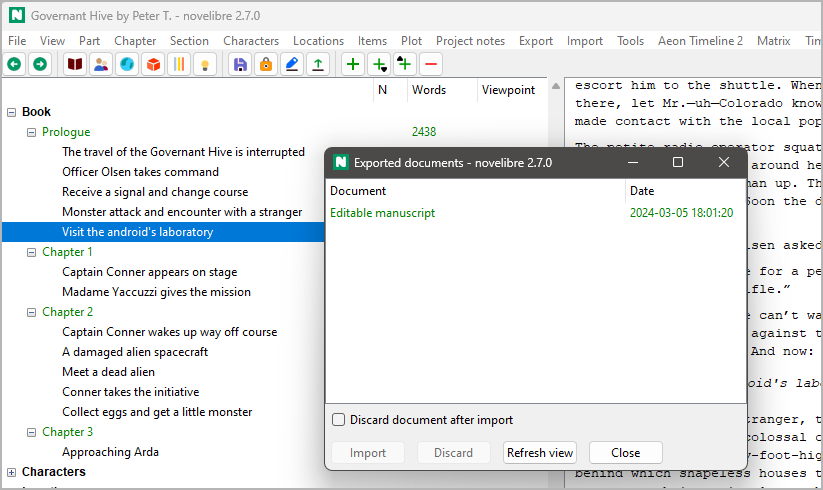

Am Manuskript schreiben
Writer als Texteditor aufrufen
Bemerkung
The following example describes the Manuskript editing workflow with LibreOffice. The same applies to ÖffnenOffice.
Other word processing programs that claim to support the ODT file format are generally not recommended.
As soon as your novel project has at least one section kann man start
writing. For this, you save your project and export your novel
to the Writer word processor either with Exportieren > Manuskript zum Bearbeiten,
or by clicking on the  toolbar icon.
toolbar icon.
Hinweis
If you use the-Menü command kann man have novelibre create a Manuskript, and ask whether it should be opened with Writer.
If you click on the toolbar icon, Writer will be launched immediately after export.

novelibre Screenshot
If you have done this before and there is still a Manuskript document from the previous writing session, you will now be asked whether you want to continue working on this document. If this is the case, answer „Bestehendes öffnen“.

novelibre Screenshot
If you answer „Überschreiben“, novelibre creates a new Manuskript document. „Cancel“ aborts the export process and lets you return to the main window.
If you have done this before and there is still a manuscript document from the previous writing session, you will now be asked whether you want to continue working on this document. If this is the case, answer „Open existing“.
novelibre Screenshot
If you answer „Overwrite“, novelibre creates a new manuscript document. „Abbrechen“ aborts the export process and lets you return to the main window.
Hinweis
novelibre checks whether an existing manuscript is newer or older than the open project, and suggests a choice by activating the appropriate button. You can accept it by hitting the Eingabetaste. If your choice follows the suggestion, you see a message in green at the bottom bar. Otherwise, the message is displayed in red, just as a reminder.
If you started the export using the Exportieren-Menü command, you may be asked whether you want to open the newly created document, depending of your Exportieren settings.

novelibre Screenshot
If you answer „yes“, Writer will be launched with the Manuskript document. Otherwise, the document is just kept for future use.
Depending on your Exportieren settings, novelibre now may lock the project, so that it can’t be accidentally modified with novelibre while worked on in Writer.
Bemerkung
novelibre starts your standard application for files with the .odt extension. Usually, the setting is made by LibreOffice or ÖffnenOffice during installation.
After you change to Writer, you see the whole novel in
a layout that is similar to the „standard Manuskript format“. The
Navigator (open with F5) shows the chapter and section Titels
in the Headings area. Double click on a heading to move the cursor
to that location. You can now write within the frames that define
the sections.

LibreOffice Writer Screenshot: Note that the text boundaries are made visible here, which is highly recommended.
Bemerkung
The section Titels displayed in the Navigator are invisible in the workspace so that they do not disrupt the flow of writing, and the impression of an original Manuskript page is retained.
Änderungen zu novelibre zurückschreiben
At the end of the writing session, save the changes, exit the Writer
word processor, and return to novelibre. Simply click on the
 toolbar icon, and your latest changes will
appear.
toolbar icon, and your latest changes will
appear.
Bemerkung
The toolbar icon mentioned above is only for the Manuskript. If you want to apply changes made in other documents like character sheets or synopses, use the Importieren-Menü.

novelibre Screenshot: The Manuskript entry is highlighted in green, because the file is newer than the open project.
Mit Writer neue Abschnitte anlegen
If you need a new section while writing, you don’t have to switch
to novelibre. Simply start a new line with a special marker
###. Wahlweise kann man add a section Titel, and, separated
by |, a section description. Alle other metadata is intended
to be entered in novelibre later.
Tipp
As of novelibre version 3.0.2 kann man use #### to create
an appended section.
The following example shows how to split an existing section:

LibreOffice Writer Screenshot: Notice the highlighted section marker
Zurück in novelibre, you see the new section. It has got a Titel, but no other metadata.

novelibre Screenshot: Notice the selected new section
Mit Writer neue Kapitel anlegen
If you need a new chapter while writing, you don’t have to switch to novelibre. Simply start a new line within the edited section with a second-level heading.
Wichtig
novelibre only re-imports text within section defining frames. Technically, it always splits sections when creating new chapters or sections from the Manuskript.
You also cannot move chapters within Writer. If you want to rearrange chapters or sections, do it with novelibre.
The following example shows how to add a chapter with Writer:

LibreOffice Writer Screenshot: It doesn’t matter what the new chapter is Titeld
Zurück in novelibre, you see a new chapter and a new section. Since the chapters are auto-numbered in this example project, the new chapter Titel already fits, while the new section’s Titel should be adjusted manually.

novelibre Screenshot